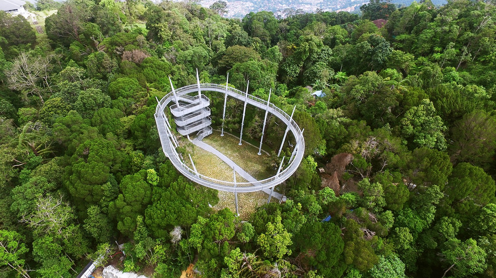

interesting things in penang hill
#1 Curtis Crest – habitat

Penang Hill Corporation announced Curtis Crest (tree top walk) will be opened to the public on 1st May 2017 in a Facebook post. It aims to promote environmental and conservation awareness amongst visitors through its nature trail, canopy walkways and zip lines. Let’s reconnect with nature at its best.
#2 Love Lock
It’s a perfect spot for couple where you can capture sweet and memorable picture with your loved one.